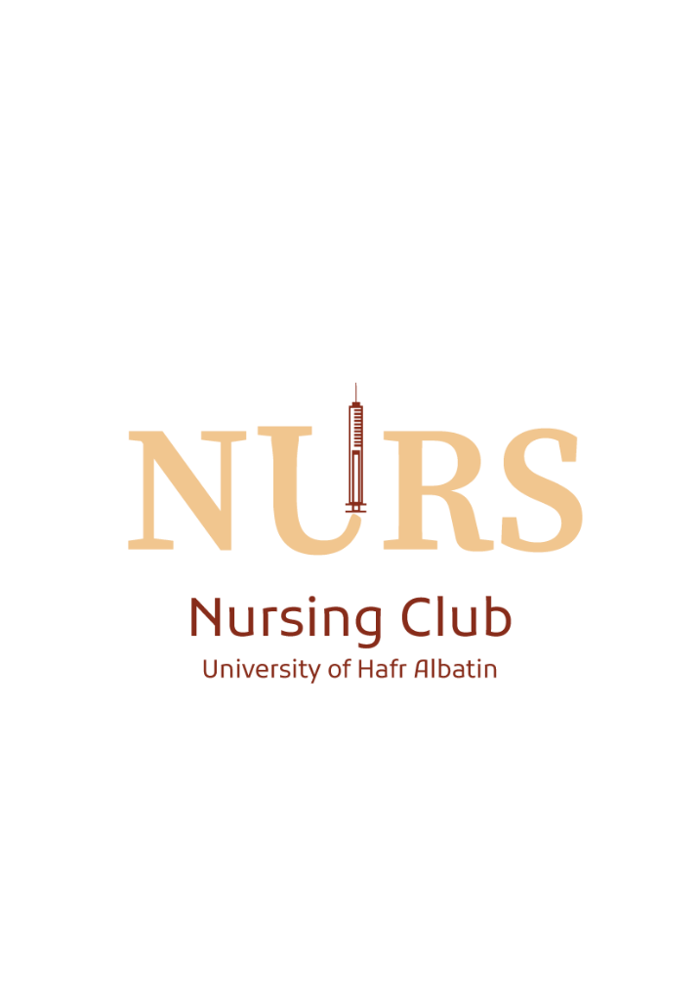

دعوة للجهات الرائدة للشراكة مع نادي التمريض في جامعة حفر الباطن، مع وضوح كامل لما يظهر للطلاب وما يعود على الراعي مقابل دعمه.
كلية التمريض • جامعة حفر الباطن
2026
دليل التبويب
ملف معدّ للإرسال للجهة كما هو. التنقّل عبر الفهرس أو تبويبات برنامج القراءة.
تبويب 01
نادي التمريض يبحث عن شركاء يضيفون قيمة حقيقية لطلبة كلية التمريض في جامعة حفر الباطن، وفي الوقت نفسه يحصل الشريك على ظهور واضح، موثّق، وموجّه لجمهور محدد: طلاب وطالبات التمريض ومنظومة أنشطتهم.
تبويب 02
نادي التمريض بجامعة حفر الباطن مجتمع طلابي يطوّر المعرفة، يبني المهارات القيادية، ويصنع أثراً مهنياً ومجتمعياً. يعمل عبر سبع لجان، ومنصة إلكترونية تجمع الفعاليات، والنشرة الأكاديمية، والشهادات، وجدار الشركاء.
الريادة والتميز في إعداد كوادر تمريضية قيادية ومؤثرة مجتمعياً واهتماماً بالمهنة.
تمكين الأعضاء وتنمية مهاراتهم عبر برامج وفعاليات نوعية وثقافية متقدمة.
| البيان | التفاصيل |
|---|---|
| الجهة | نادي التمريض – كلية التمريض – جامعة حفر الباطن |
| الهوية | NURSS |
| مؤشرات معلنة على المنصة | +200 عضو • +15 فعالية في السنة • أكثر من عامين من العطاء |
| اللجان | التصميم، الإعلام، تنظيم الفعاليات، الموارد البشرية، العلاقات العامة، المحتوى العلمي، الجودة والتطوير |
| المنصة | https://nursing-club.vercel.app |
تبويب 03
الشراكة لا تُقاس بعدد منشورات فقط. النادي يصل للطالب من أكثر من باب، وكل باب يمكن أن يحمل اسم الجهة أو عرضها حسب الاتفاق.
طلاب وطالبات التمريض بمختلف المستويات، عبر الموقع والنشرة ومجتمع الواتساب المعلن.
أعضاء عاملون ينفّذون الفعاليات ويستقبلون الضيوف ويوثّقون الحضور.
المشاركون في الملتقيات، حملات التثقيف الصحي، والورش داخل الجامعة ومجتمعها.
| القناة | ماذا تصل |
|---|---|
| صفحة اكتشف النادي | جدار دائم للرعاة حسب التصنيف: استراتيجي / ذهبي / فضي / برونزي. |
| البنر الترحيبي | واجهة الموقع الأولى، تُستخدم للمناسبات والشراكات البارزة بالاتفاق. |
| الفعاليات والملصقات | ظهور مرتبط بنشاط محدد أمام الحضور وعلى صفحة الفعاليات. |
| النشرة الأكاديمية | قناة أسبوعية يفتحها الطالب للجداول والأخبار والمصادر. |
| لجنة الإعلام | تغطية صور وفيديو تُحفظ في أرشيف النادي وتُستخدم في المعرض والمنصات. |
| إكس وتيك توك | الحساب الرسمي @Nurs_club. |
| الشهادات | المشارك يخرج بوثيقة من النادي، فارتباط الجهة بالفعالية يبقى في ذاكرة الطالب. |
تبويب 04
هذا هو جوهر التعاون. الجهة تقدّم الدعم، والنادي يقدّم حضوراً رسمياً داخل منصته وأنشطته وفق الباقة المتفق عليها.
شعار الجهة أو مقطع تعريفي على جدار «شركاء النجاح والرعاة»، مع تصنيف الشراكة، ورابط لموقعها أو حساباتها.
نص العرض أو الخصم يظهر على بطاقة الشريك، مع كود اختياري ينسخه الطالب من الصفحة. مثال شائع: خصم لطلاب النادي بكود واضح.
عند رعاية نشاط محدد: ذكر في الملصق، والحضور، وتقرير الجودة الذي يسجّل اسم الجهة ونوع الدعم وتفاصيله.
لجنة الإعلام توثّق الفعالية بالصورة والفيديو. الحسابات الرسمية تنقل الحضور بعد التنسيق.
لجنة العلاقات العامة تتولى التنسيق الخارجي واستقبال ممثلي الجهة في المناسبات المتفق عليها.
تقارير الفعاليات لدى لجنة الجودة تُبقي اسم الراعي ضمن سجل النشاط، لا ضمن رسالة شكر تُنسى.
تبويب 05
التصنيفات التالية هي المعتمدة داخل المنصة. حجم الدعم ونوعه يُحدَّدان بالاتفاق حسب طبيعة الجهة، دون التزام مسبق برقم مالي في هذا الملف.
| الباقة | الظهور على المنصة | ما يعود على الجهة |
|---|---|---|
| شريك استراتيجي | المستوى الأعلى في جدار الشركاء مع الرعاة الذهبيين. | شعار أو فيديو، عرض وكود للطلاب، رابط رسمي، أولوية في البنر والمناسبات الكبرى، وتنويه أوضح في التغطية والتقارير المرتبطة. |
| راعي ذهبي | قسم الرعاة الذهبيين. | شعار، عرض وكود، ربط بفعالية حسب الاتفاق، وتغطية إعلامية للنشاط المدعوم. |
| راعي فضي | قسم الرعاة الفضيين. | شعار ورابط، مع عرض اختياري للطلاب، وإشارة في المواد ذات الصلة. |
| راعي برونزي | جدار الرعاة البرونزيين والشركاء. | شعار رسمي وشكر معلن على المنصة. |
| جهة داعمة | ظهور داعم ضمن الشركاء. | توثيق الدعم العيني أو الخدمي مع شكر يناسب حجم المساهمة. |
تبويب 06
بعد اعتماد الشراكة تُنشأ بطاقة للجهة في صفحة «اكتشف النادي»، ويراها الزائر ضمن شركاء النجاح.
يفتح صفحة اكتشف النادي، يرى الجهة حسب مستواها، يقرأ العرض، وينسخ الكود إن كان مفعّلاً. لا يحتاج وسيطاً داخلياً ليصل إلى عرضكم.
البطاقة تبقى ما دامت الشراكة سارية، ويمكن تعديل العرض أو الكود لاحقاً دون إعادة بناء الاتفاق من الصفر.
تبويب 07
اللجنة توثّق اسم الجهة، مسؤول التواصل، ورقم الاتصال، وحالة الملف: قيد المراجعة، موافقة، أو اعتذار. الهدف منع تكرار الزيارة على الجهة نفسها من أكثر من عضو.
ما يظهر للعامة هو البطاقة المعتمدة فقط. تفاصيل التفاوض تبقى داخل اللجنة حتى يكتمل الاتفاق.
تبويب 08
النادي لا يحصر التعاون في مبلغ نقدي. أي دعم يخدم الطالب أو يسهّل فعالية يمكن أن يتحول إلى باقة ظهور مناسبة.
تغطية تكاليف نشاط، استراحة، ضيافة، جوائز، أو مستلزمات ميدانية.
عرض دائم أو موسمي على منتجات أو خدمات الجهة بكود معلن.
مستلزمات صحية، قرطاسية، ضيافة، أو خدمات تصوير وطباعة.
ورشة، استضافة مختص، أو محتوى يفيد المسار الأكاديمي للطالب.
المشاركة في حملات التثقيف الصحي داخل الجامعة أو المدينة.
اتفاق فصل دراسي أو عام كامل مع بقاء البطاقة على المنصة.
تبويب 09
نرحب بتواصل الجهات الجادة. لجنة العلاقات العامة هي نقطة التنسيق الرسمية للشراكات، وتضمن أن الاتفاق يتحول إلى ظهور واضح للطلاب وليس إلى وعد غير منفذ.
لجنة العلاقات العامة – نادي التمريض
جامعة حفر الباطن – كلية التمريض
الموقع: https://nursing-club.vercel.app
إكس وتيك توك: @Nurs_club
واتساب النادي: 0553731265